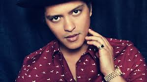

Bruno Mars
La música de Mars es notable por mostrar una gran variedad de estilos e influencias, como pop,55 rock,55 reggae,55 R&B,56 soul57 y hip hop.4 Jon Caramanica de The New York Times lo llamó "uno de los cantantes más versátiles y accesibles del pop, con una voz suave e influenciada por el soul, que se adapta a una amplia gama de estilos".4 Mars fue influenciado inicialmente por artistas de R&B como Keith Sweat, Jodeci y R. Kelly, así como por el rock 'n roll de los años 1950 y Motown. En el instituto empezó a escuchar grupos de rock clásico como The Police y Led Zeppelin.58 Mars explicó que "no es fácil crear canciones con esa mezcla de rock, soul y hip hop, y solo hay un puñado de ellas".58 También afirma ser fan de Britney Spears, Alicia Keys, Jessie J, Jack White y The Saturdays.59 Además, Mars afirma que su trabajo con otros artistas influenció su estilo musical, diciendo que ""Nothin' on You" tuvo un ambiente Motown, "Billionaire" se acercó más al reggae, aunque una de mis favoritas es la canción de Cee-Lo Green (Fuck You!). No creo que otra persona pudiese haber cantado esa canción". Cita el doo-wop como una gran influencia en su música, refiriéndose al género como "simplemente canciones de amor sencillas - tan encantador, sencillo y romántico".60 Líricamente, muchas canciones de Mars han sido descritas como despreocupadas y optimistas;61 sin embargo, algunas canciones tratan temas más oscuros, como Grenade, Liquor Store Blues o Talking to the Moon, que cuentan relaciones fracasadas y comportamientos auto-destructivos.
CLOSE 2010-2012: It's Better If You Don't Understand y Doo-Wops & Hooligans[editar] Bruno Mars actuando en Houston, Texas en noviembre de 2010. Después de este éxito, Mars hizo su debut en un EP, titulado It's Better If You Don't Understand y lanzado el 11 de mayo de 2010.18 El EP alcanzó su punto máximo en la posición 99 en el Billboard 200 y lanzó como sencillo "The Other Side", con la colaboración de los raperos Cee Lo Green y B.o.B.19 20 Colaboró una vez más con Green en agosto de 2010 al co-escribir su sencillo "Fuck You!". Realizó un popurrí de "Nothin' on You" y "Airplanes" con B.o.B y Hayley Williams en los premios MTV Video Music Awards 2010 el 12 de septiembre de 2010.21 El álbum debut de Mars "Doo-Wops & Hooligans" fue lanzado digitalmente el 4 de octubre de 2010 y en forma física el 5 de octubre de 2010.22 23 24 El primer sencillo, "Just the Way You Are", fue lanzado el 19 de julio de 2010,25 y ha llegado a la posición número 1 del Billboard Hot 100.26 El video musical fue lanzado el 8 de septiembre de 2010.27 Dos canciones del álbum, "Liquor Store Blues" con Damian Marley y "Grenade" fueron lanzados en iTunes Store como sencillos promocionales.28 La portada del álbum fue lanzada oficialmente el 30 de agosto de 2010.29 Abrió los conciertos de Maroon 5 en su Hands All Over Tour que comenzó el 6 de octubre de 2010. Mars también cantó con Travie McCoy en una gira europea que comenzó el 18 de octubre de 2010.24 Según Nielsen SoundScan, hasta octubre de 2012, Doo-Wops & Hooligans vendió 1 842 000 copias en Estados Unidos,30 donde debutó en la tercera posición de la lista Billboard 200.31 Mars colaboró en la canción "Lighters" del grupo Bad Meets Evil, formado por los raperos Eminem y Royce Da 5'9". La canción pertenece al EP Hell: The Sequel y se filtró en Internet en junio de 2011.32 El 13 de septiembre de 2011 se estrenó "Mirror" con Lil Wayne, canción perteneciente al noveno álbum de Wayne, Tha Carter IV.33 El 22 de septiembre se anunció que Mars participaría en la banda sonora de la película The Twilight Saga: Breaking Dawn, con la canción "It Will Rain". Se estrenó el 27 de septiembre.34 El 11 de octubre fue lanzado el sencillo "Young, Wild & Free" de los raperos Snoop Dogg y Wiz Khalifa, que cuenta con la colaboración de Mars. El 23 de octubre cantó "Runaway Baby" en el programa británico The X Factor,35 y el 30 de noviembre consiguió 6 nominaciones para los Premios Grammy 2012.36 Ese mes apareció en el programa infantil Sesame Street, interpretando la canción "Don't Give Up".37 En abril de 2012 posó para la revista Playboy, convirtiéndose en el 10º hombre en aparecer en la portada de la revista.38 El 19 de septiembre de 2010, Mars fue arrestado en Las Vegas por posesión de cocaína.39 Al hablar con un oficial de policía, Mars habría declarado que lo que hizo fue "tonto" y que "nunca ha consumido drogas antes".40 41 Mars se declaró culpable de posesión de drogas siendo este un delito grave, los cargos se borrarán de su registro de antecedentes penales, siempre y cuando se pague una multa de 2.000$, 200 horas de servicio comunitario y complete un curso de consejería sobre drogas.42 En noviembre de 2011, Mars confirmó que había empezado a trabajar en su segundo álbum, el cual será "más divertido".43 El 22 de marzo de 2012 se anunció que había firmado un contrato de publicación con BMG Chrysalis US.44 2012-presente: Unorthodox Jukebox y Super Bowl XLVIII[editar] El 22 de marzo de 2012, se anunció que Mars había firmado un acuerdo con BMG Chrysalis US.45 Mars anunció que el primer sencillo de su nuevo álbum sería "Locked Out of Heaven", que fue lanzado el 1 de octubre de 2012. El 11 de diciembre de 2012, Mars lanzó su segundo álbum de estudio, Unorthodox Jukebox. Además de anunciar el título del álbum y el primer sencillo, Mars anunció las otras 9 canciones del álbum.46 Señaló que el álbum sería más variado y se niega a "elegir un estilo musical", explicando, "Escucho mucha música, y quiero tener la libertad y el lujo de entrar a un estudio y decir, 'Hoy quiero hacer un álbum hip-hop, R&B, soul o de rock.'" En Estados Unidos, el álbum debutó en el número dos en Billboard 200 con ventas de 187.000.47 El álbum también debutó en el puesto número uno en Suiza y Reino Unido. Fue el álbum vendido más rápido por un artista en 2012.48 El primer sencillo del álbum, "Locked Out of Heaven", ha alcanzado al puesto número uno en Billboard Hot 100 y en varios países en todo el mundo. El segundo sencillo del álbum, "When I Was Your Man, ha llegado al puesto número 10 en quince países, incluyendo el puesto número uno en Billboard Hot 100. En febrero de 2013, Mars fue nominado por Mejor Canción de Rap en los Premios Grammy, como productor y escritor de "Young, Wild & Free", de todas formas perdió contra "Niggas in Paris". Durante la ceremonia, cantó con Sting, Rihanna, Ziggy Marley y Damian Marley en un homenaje a Bob Marley. El tercer sencillo, "Treasure llegó al puesto número cinco en Estados Unidos y tuvo un menor éxito comercial en todo el mundo que los dos sencillos anteriores. El 24 de mayo de 2013, Major Lazer lanzó "Bubble Butt" como el cuarto sencillo de su álbum Free the Universe con Tyga, Mystic y Mars cantando, convirtiéndolo el sencillo más exitoso de Major Lazer. Mars dio a conocer el siguiente sencillo, "Gorilla", que alcanzó el puesto número 22 en Hot 100 y tuvo éxito en todo el mundo, en los MTV Video Music Awards 2013.49 El 25 de septiembre, Mars anunció que realizaría ocho shows en The Cosmopolitan of Las Vegas entre diciembre de 2013 y agosto de 2014.50 El 26 de enero de 2014, Mars ganó el premio de Mejor álbum de pop vocal por Unorthodox Jukebox en los Premios Grammy, una semana después, encabezó el show del Super Bowl y se le unió los Red Hot Chili Peppers como invitado musical.51 52 Siendo Mars el primer cantante con menos de 30 años y de ascendencia puertorriqueña en cantar en el show.53 El show terminó siendo el más visto en la historia del Super Bowl, llevando un récord de 115.3 millones de espectadores, pasando el récord anterior con 114 millones, hecho por Madonna hacía dos años.
2010: Doo-Wops & Hooligans 2012: Unorthodox Jukebox
Everyday I wake up next to a angel More beautiful than words could say They said it wouldn't work but what did they know? Cause years passed and we're still here today Never in my dreams did I think that this would happen to me As I stand here before my woman I cant fight back the tears in my eyes Oh how could I be so lucky I must've done something right And I promise to love her for the rest of my life Seems like yesterday when she first said hello Funny how time fly's by when you're in love It took us a lifetime to find each other It was worth the wait cause I finally found the one Never in my dreams did I think that this would happen to me As I stand here before my woman I cant fight back the tears in my eyes Oh how could I be so lucky I must've done something right And I promise to love her for the rest of my life
dentro de una familia de músicos, Mars comenzó a crear música desde una edad temprana, y actuó en muchos escenarios de su pueblo natal a lo largo de su niñez
EL MEJOR CANTANTE DEL MUNDO :3